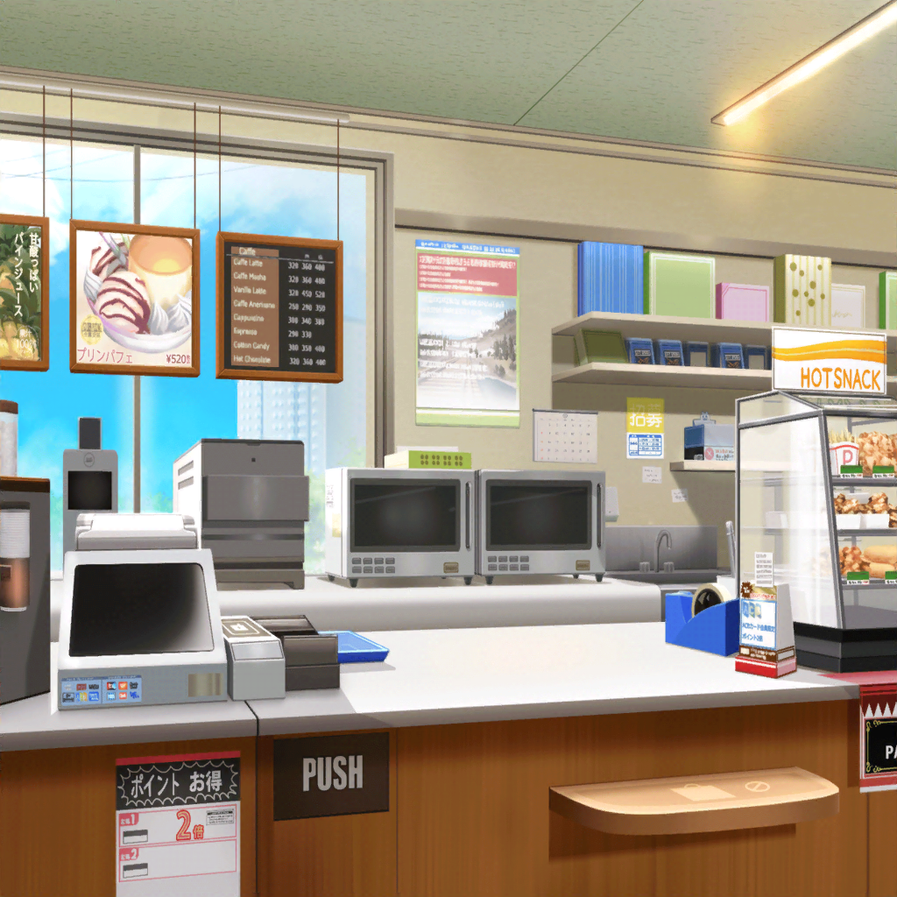

コンビニ
リサ
あ、まりなさんと{{userName}}さんじゃん！
やっほー
まりな
こんにちは、リサちゃん。
相変わらず、アルバイト頑張ってるみたいだね
リサ
もっちろん！ 二人は買い出し？
まりな
うん。まあ、目的は買い出しだけじゃないんだけどね
まりな
実はさっき、{{userName}}さんと
『高校生バイト応援ソング』聴いてたんだ。それで
なんとなーく顔出していこうかって話になっちゃって
リサ
それでわざわざ来てくれたんだ？
ありがとー☆
リサ
どうだった？ アタシ達の曲
まりな
どうって、当然文句なし！ 最高の応援ソングだったよ！
リサ
ほんとに？ 良かったー！
リサ
実はアタシ、当日ガッチガチに緊張しててさ。
みんなの足引っ張ったんじゃないかって心配してたんだ
まりな
意外……！
リサちゃん、あんまり緊張しないタイプかと思ってた
リサ
あはは、するする！ もー緊張しまくりだったよ！
リサ
特に今回のバンドって、
普段やってる音楽とか全然バラバラじゃん？
どんな曲ができるのか想像もできなくてさ
リサ
まあ、いざ作り始めてみたら
思ってたよりスムーズに進んだんだけど。
彩がしっかり仕切ってくれて……あれは助かったなー
リサ
彩って、自分ではアドリブに弱いーとかってよく言ってるけど
実際はまとめたりするの上手くてさ。
さすがプロってカンジ？
リサ
花音とかつぐみがフォローしてくれるおかげで
緊張もすぐにほぐれたしね♪
モカは、まーいつも通りってカンジだったけど
まりな
ふふっ。なんか楽しそう
リサ
すーーーーっごく楽しかったよ！
最終的にはもうバイトあるある、みたいな話になったりしてさ
リサ
わかるー！ って言い合ったりしちゃって。
そのおかげで、みんなの気持ちもバッチリ１つになったしね☆
リサ
『アタシ達も頑張るから、一緒に頑張ろう！』って
そういう気持ち。少しでも伝わってくれたら
いいなー、なーんて思ったりして
まりな
大丈夫、絶対伝わるよ！
ねっ。{{userName}}さんもそう思うよね？
リサ
『自分も負けてられない』って……
うん。そう思ってくれたんなら、大成功っ
リサ
アタシ達の気持ちがいーっぱい詰まった曲を聴いて
いつもの５倍……いや、１０倍は頑張ってもらわないとね♪
まりな
ふふ、任せて！ それじゃリサちゃん、またスタジオでね
リサ
うんっ！ まったねー☆